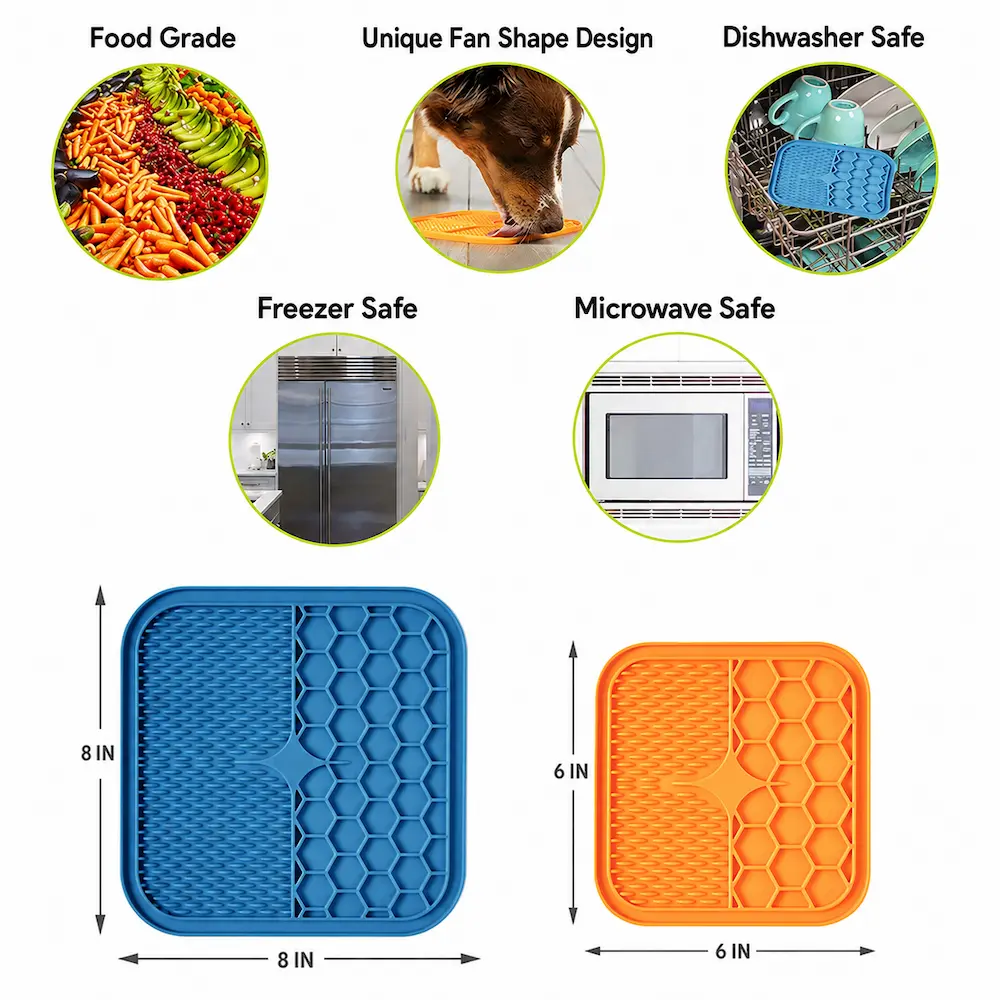
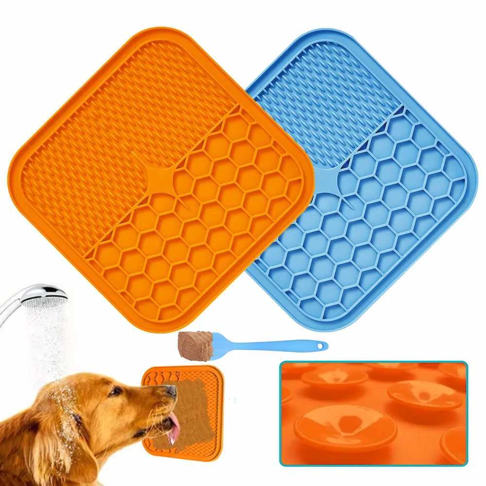
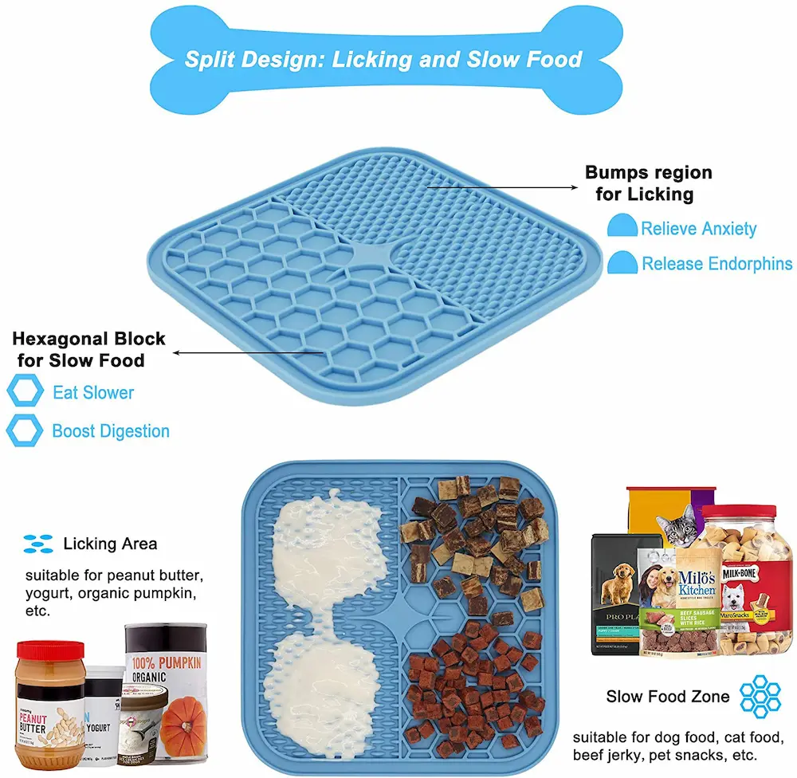
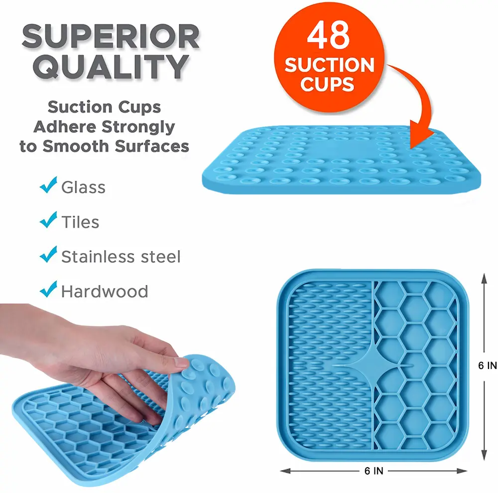
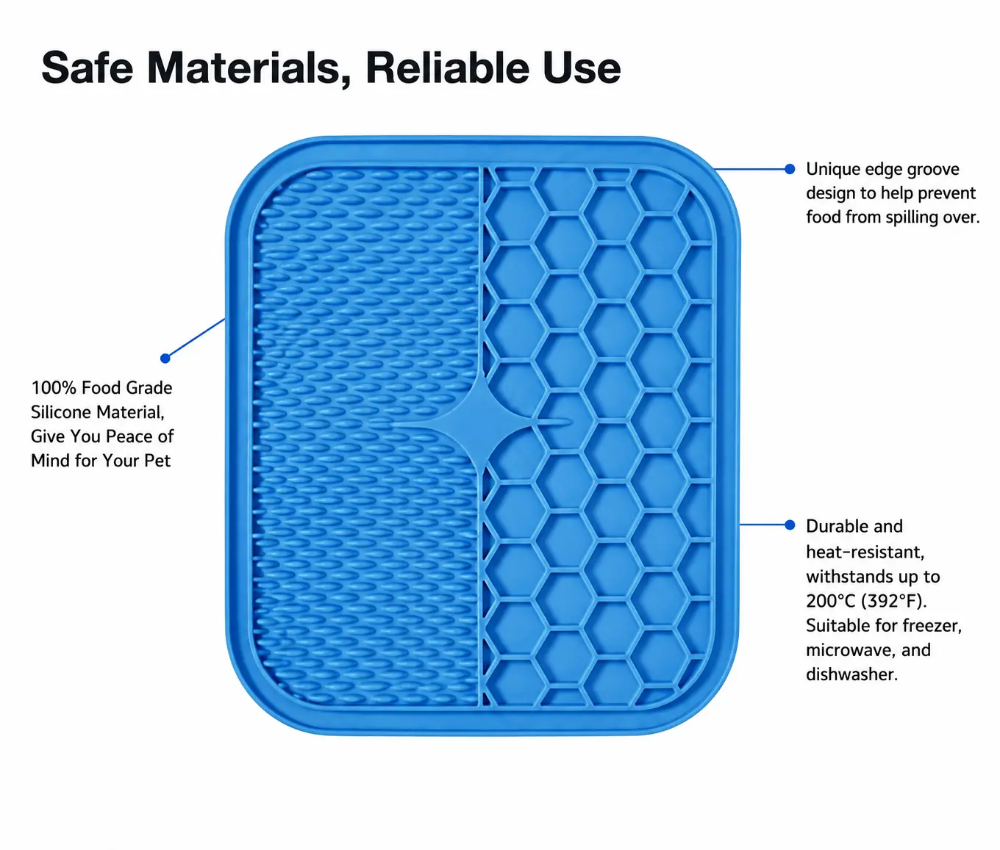
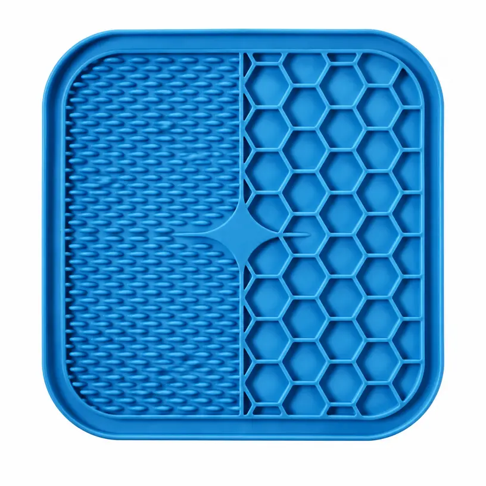
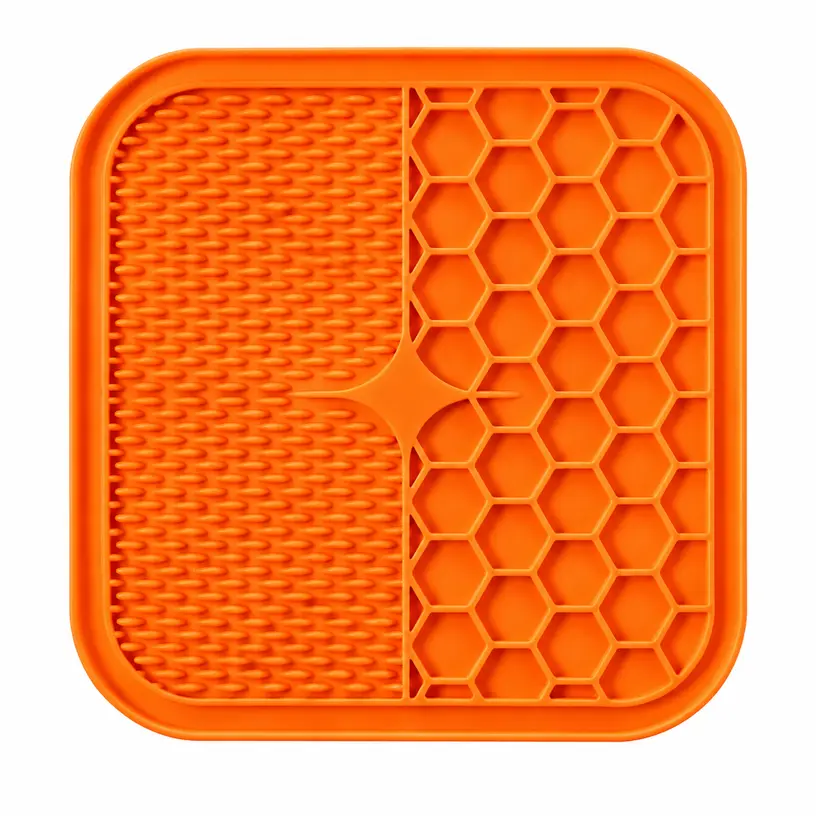
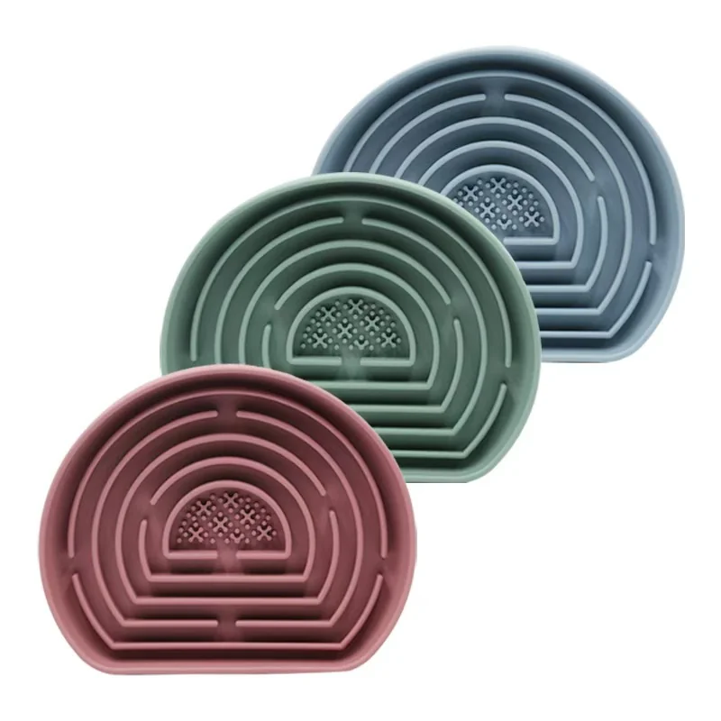

Silicone Dog Lick Mat with Suction Cups
185 × 155 mm · 3 textures · suction base · 4 colours · SKU LM-007
View Product
Silicone Lick Mat with Scraper and Suction Cups
Request a Quote





Available in 2 colors: Blue, Orange. Custom colors available for OEM orders.
| Material | Food-grade silicone (LFGB / FDA tested) |
|---|---|
| Size S | 15 × 15 × 1 cm, 92 g (gross) |
| Size L | 21 × 21 × 1 cm, 160 g (gross, with OPP bag) |
| Silicone Scraper | 21 × 4.2 × 1 cm, 40 g |
| Colors | Blue, Orange |
| MOQ | From 10 pcs (stock colours) · custom colour or logo quoted on request |
| Sample Lead Time | Approx. 7 days |
| Production Lead Time | 15–25 days after sample approval |
| Customization | Logo, color, packaging available |
| Material reports | LFGB / FDA / REACH — silicone parts; reports on request |
| Set Includes | 1 × lick mat + 1 × silicone scraper |
| Suction Base | Suction cups on the bottom |
| Packaging | Individual OPP bag (25 × 23 cm) |
| Carton (S) | 200 pcs · 50 × 35 × 30 cm · net 18 kg · gross 19 kg |
| Carton (L) | 100 pcs · 50 × 35 × 30 cm · net 17 kg · gross 18 kg |
| SKU | LM-006 |
The mat has two texture areas: a field of fine ridges for thin spreads and a block of deep honeycomb cells for thicker food. Peanut butter, yogurt, wet food or frozen puree can be spread across both, so the dog licks and works at the surface instead of finishing in seconds.
Each set ships with a silicone scraper that matches the mat. It spreads food into the grooves evenly and scrapes the mat clean afterwards, which keeps the texture cells usable instead of clogged with dried food.
Size S is 15 × 15 × 1 cm and weighs about 92 g, suitable for small dogs and cats. Size L is 21 × 21 × 1 cm and weighs 160 g gross (with its OPP bag) for medium and large dogs. The scraper measures 21 × 4.2 × 1 cm and weighs about 40 g.
Suction cups on the underside grip smooth floors, tiles, glass and bath surfaces, so the mat stays put while a dog licks or paws at it.
Made from food-grade silicone tested to LFGB and FDA standards. The material is BPA-free, PVC-free and odorless, and is safe for direct food contact including frozen treats.
Rinse under a tap or place on the top rack of a dishwasher. The scraper helps lift dried food from the cells before washing, and the flexible mat releases residue easily.
Stock colors are Blue and Orange. Custom Pantone colors, embossed or printed logos, OPP bags and printed color boxes are available. The scraper can be logo-printed as part of the set. Sample lead time is about 7 days; production runs 15–25 days after sample approval.
Size S packs 200 pcs per 50 × 35 × 30 cm carton (net 18 kg, gross 19 kg); size L packs 100 pcs per carton (net 17 kg, gross 18 kg). Each mat ships in an individual 25 × 23 cm OPP bag; the mat-and-scraper format works as a ready gift or bundle set for retail and Amazon listings.

Blue

Orange
Yes. Each set includes one matching silicone scraper (21 × 4.2 × 1 cm, approx. 40 g), packed with the mat in an individual OPP bag.
Size S: 15 × 15 × 1 cm, 92 g gross. Size L: 21 × 21 × 1 cm, 160 g gross (with OPP bag). Both sizes include a scraper.
Blue and Orange are stock colors. Custom Pantone colors are available for OEM orders, including logo printing on the mat and scraper.
Yes. The mat can go on the top rack of a dishwasher and can be frozen with wet food, yogurt or broth.
From 10 pcs for stock colours. Custom colours, logo and packaging are quoted per order — send your target quantity and market and we reply within 12 hours.
185 × 155 mm · 3 textures · suction base · 4 colours · SKU LM-007
View Product
22 × 19 cm · maze texture · 270 g · 3 colours · SKU LM-008
View Product
19 × 17.5 cm · maze channels · 305 g · 3 colours · SKU LM-012
View ProductGet wholesale pricing, request a sample, or discuss OEM customization — we reply within 12 hours.
Marvin Bai — Sales Manager
📧 marvin@szqidian.net
📱 +86 159 1412 0274
Shenzhen Qidian Electronic Technology Co., Ltd.